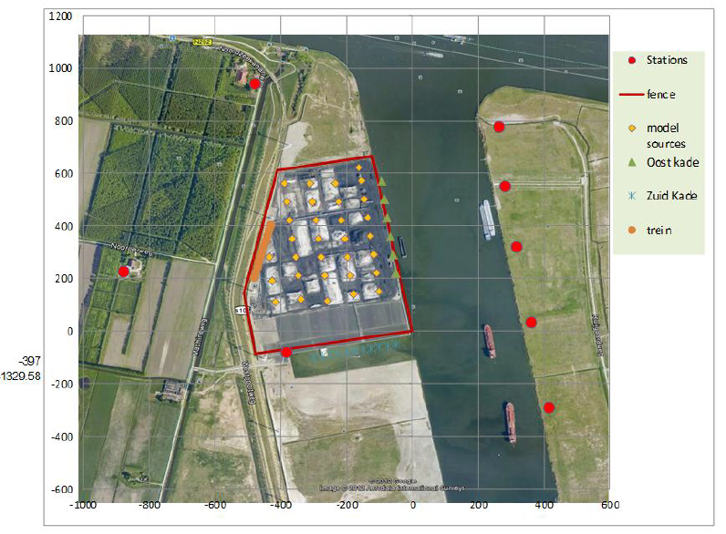

Stofmonitoring
Ons team heeft zogenaamde stofmonitoringsnetwerken op verschillende plekken in Nederland geïnstalleerd. Onze opstelling staat ons toe om snel de fijnstofconcentratie te bepalen (specifiek PM1, PM2.5, en PM10). Met behulp van wiskundige modellen (specifiek: inversie) kunnen we de emissiesterkte van verschillende bronnen bepalen. Uiteindelijk staat dit ons toe om alarm te slaan wanneer een bepaalde emissiesterkte of concentratie een vooraf gedefinieerde drempelwaarde overschrijdt. We onderzoeken of we hieruit ook kentallen kunnen bepalen ten behoeve van officiële documentatie en vergunningen.

Bron map van Rietlanden
Copyright TNO